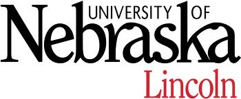
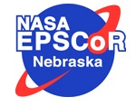
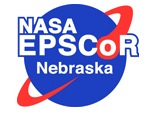
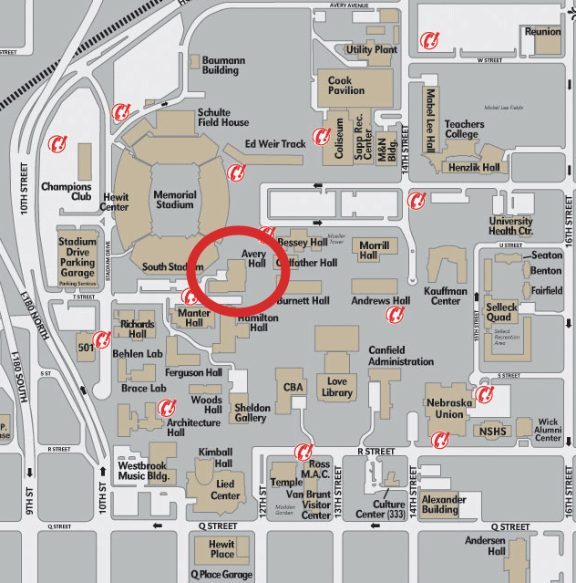

Careers in Research : A Workshop for Undergraduates
August 12-13, 2010

 

Careers in Research : A Workshop for Undergraduates
August 12-13, 2010
A career as a researcher can be rewarding on many levels. Think of how the NASA JPL researchers who developed Spirit and Opportunity felt when those rovers landed safely and first started driving across the Martian surface. Think of how the NASA researchers who developed the Hubble space telescope felt when unprecedented images of the galaxy were first collected, like this one of a stellar nursery in the Carina Nebula
The goal of the workshop is to give you a glimpse of what it is like to be a researcher at a place like NASA and to discuss what it takes to qualify yourself to be employed as a researcher.

The workshop is organized by members of the Laboratory for Empirically-based Software Quality Research and Development in the Department Computer Science and Engineering at the University of Nebraska - Lincoln and is funded by the National Aeronautics and Space Administration under grant NNX08AV20A.
Additional support for conducting the workshop is provided by members of the Cyber-physical Networking Lab and the Robotics and Mechatronics Lab at UNL.
Participants at the workshop come from
The workshop will be held in Avery Hall on the City Campus
of the University of Nebraska - Lincoln; Avery Hall is circled
on this map.

Avery Hall is within easy walking distance of the Embassy Suites Hotel, where out of town participants will be lodging.
The workshop will meet in Avery 115 which is on the ground floor of Avery. We will have signs directing you to the room on the first day.

Thursday August 12, 2010
Workshop Dinner (Thursday Aug. 12, 2010)
Friday August 13, 2010

There is parking at the Embassy Suites hotel, so if you are staying there it is probably easiest to just leave your car and walk over (following the instructions linked above).
If you fill out the voucher and bring it to the workshop on Friday morning along with your receipts, then Nancy will process your reimbursement. Otherwise you can mail it in once you return home.
{kind=link}
{kind=link}
{kind=link}
{kind=link}